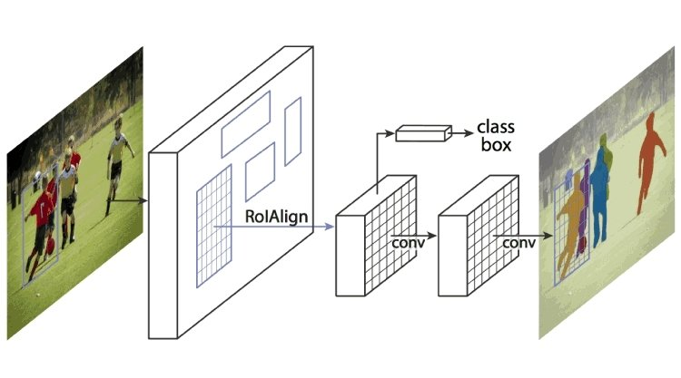

This research presents a Mask R-CNN-based approach for accurate wall segmentation in floorplan images. The project leverages the instance segmentation capabilities of Mask R-CNN to address the challenges of wall detection and extraction in complex architectural layouts. By utilizing a pre-trained Mask R-CNN model and fine-tuning it on a specialized floorplan dataset, we achieve precise pixel-level segmentation of wall structures, enabling improved accuracy in architectural analysis and 3D reconstruction tasks.
← Back to Topics

Wall Segmentation in Floorplans using Mask R-CNN
Abstract
Background
Problem Statement
Accurate wall segmentation in floorplans is a critical task in architectural analysis and 3D reconstruction. Traditional computer vision approaches often struggle with the complex nature of floorplan images, which present unique challenges:
- Complex layouts with overlapping architectural elements
- Varied wall thicknesses and styles across different architectural designs
- Presence of furniture, doors, and other elements that can interfere with wall detection
- Need for pixel-level accuracy in wall boundary detection
- Handling of different architectural styles and notations
Note: Accurate wall segmentation is fundamental for subsequent tasks like room detection and 3D reconstruction.
Literature Review
| Paper | Focus | Strengths | Weaknesses |
|---|---|---|---|
| 01. Automatic Extraction of Indoor Spatial Information from Floor Plan Image (https://www.mdpi.com/2220-9964/10/12/828) | Large-Scale Complex Buildings |
|
|
| 02. Towards Robust Object Detection in Floor Plan Images (https://www.mdpi.com/2076-3417/11/23/11174) | Furniture Detection |
|
|
| 03. Wall Extraction and Room Detection (https://dam-oclc.bac-lac.gc.ca/download?is_thesis=1&oclc_number=1199654049&id=5e379175-0349-4107-9c2e-aff6c6baa3f1&fileName=Cabrera-Vargas_Dany_MSc_2018.pdf) | Multi-Unit Floor Plans |
|
|
| 04. Deep Floor Plan Recognition (https://www.sciencedirect.com/science/article/abs/pii/S0926580522002217) | Multi-Task Network |
|
|
| 05. Parsing Line Segments (https://arxiv.org/abs/1908.11025) | Graph Neural Networks |
|
|
Key Takeaways
- CNN models show superior performance
- Cascade Mask R-CNN > Faster R-CNN
- Effective for complex multi-unit plans
- Multi-task approach improves performance
Methodology
Why Mask R-CNN?
Mask R-CNN was chosen for this project because:
- Combines object detection and instance segmentation
- Provides pixel-level accuracy for wall boundaries
- Can handle complex floorplan layouts
- Supports transfer learning with pre-trained models
How Mask R-CNN Works
Mask R-CNN is a two-stage object detection and instance segmentation framework that extends Faster R-CNN. The architecture consists of four main components working together:

Mask R-CNN Framework for Instance Segmentation. Source: viso.ai (https://viso.ai/deep-learning/mask-r-cnn/)
Architecture Components
- Backbone Network
- Pre-trained CNN (e.g., ResNet-101)
- Extracts features from input images
- Generates feature maps at different scales
- Region Proposal Network (RPN)
- Uses anchor boxes at multiple scales
- Generates potential object regions (RoIs)
- Predicts objectness scores
- RoIAlign Layer
- Maintains precise spatial locations
- Eliminates quantization errors
- Extracts fixed-size feature maps
- Mask Branch
- Uses a small Fully Convolutional Network (FCN)
- Predicts pixel-level segmentation masks
- Works in parallel with classification and bounding box regression
Process Flow
- The backbone network processes the input image and extracts features
- RPN generates potential object regions using anchor boxes
- RoIAlign processes these regions to extract fixed-size feature maps
- The mask branch generates pixel-level segmentation masks
- Final output includes class labels, bounding boxes, and segmentation masks
Dataset Advantages:
- High-quality annotations
- Large and diverse collection
- Precise polygon-based segmentation
Dataset
The project uses the Floor Plan Segmentation dataset from Roboflow.
Dataset Details
- Source: Roboflow Floor Plan Segmentation Dataset (https://universe.roboflow.com/floor-plan-segmentation/new_segmentation_plan)
- Size: Approximately 5000 images available for training
- License: Creative Commons Attribution 4.0 International (https://creativecommons.org/licenses/by/4.0/)
Code Implementation
Key Code Files
1. Floorplan Training Script (floorplan_training.py)
import os
import xml.etree.ElementTree as eT
import numpy as np
from skimage.draw import polygon
import mrcnn.config
import mrcnn.model
import mrcnn.utils
# Extract polygons
def extract_polygons(filename):
tree = eT.parse(filename)
root = tree.getroot()
polygons = []
for obj in root.findall('.//object'):
polyp = obj.find('polygon')
if polyp is not None:
x_points = []
y_points = []
for pt in polyp.findall('.//pt'):
x_points.append(float(pt.find('x').text))
y_points.append(float(pt.find('y').text))
all_points_x = np.array(x_points)
all_points_y = np.array(y_points)
polygons.append({
'all_points_x': all_points_x,
'all_points_y': all_points_y
})
width = int(root.find('.//size/width').text)
height = int(root.find('.//size/height').text)
return polygons, width, height
# Dataset class
class FloorplanDataset(mrcnn.utils.Dataset):
def load_dataset(self, dataset_dir):
self.add_class("dataset", 1, "Wall")
images_dir = dataset_dir + '/images/'
annotations_dir = dataset_dir + '/annots/'
for i, filename in enumerate(os.listdir(images_dir)):
image_id = filename[:-4]
img_path = os.path.join(images_dir, filename)
ann_path = os.path.join(annotations_dir, image_id + '.xml')
self.add_image('dataset', image_id=image_id, path=img_path, annotation=ann_path)
def load_mask(self, image_id):
info = self.image_info[image_id]
path = info['annotation']
polygons, w, h = self.extract_polygons(path)
masks = np.zeros([h, w, len(polygons)], dtype=np.uint8)
class_ids = []
for i, poly in enumerate(polygons):
all_points_x = [float(poly[f'x{j + 1}']) for j in range(len(poly) // 2)]
all_points_y = [float(poly[f'y{j + 1}']) for j in range(len(poly) // 2)]
rr, cc = polygon(all_points_y, all_points_x, (h, w))
masks[rr, cc, i] = 1
class_name = "Wall"
class_id = self.class_names.index(class_name) if class_name in self.class_names else -1
class_ids.append(class_id)
return masks, np.array(class_ids, dtype=np.int32)
# A helper method to extract the polygon coordinates from the annotation file
def extract_polygons(self, filename):
tree = eT.parse(filename)
root = tree.getroot()
polygons = []
for polygon in root.findall('.//polygon'):
poly = {}
for i in range(1, 6): # x1, y1, x2, y2, etc.
x_tag = f'x{i}'
y_tag = f'y{i}'
x_elem = polygon.find(x_tag)
y_elem = polygon.find(y_tag)
if x_elem is not None and y_elem is not None:
poly[x_tag] = x_elem.text
poly[y_tag] = y_elem.text
polygons.append(poly)
width = int(root.find('.//size/width').text)
height = int(root.find('.//size/height').text)
return polygons, width, height
# Configuration class
class FloorplanConfig(mrcnn.config.Config):
NAME = "floorplan_cfg"
GPU_COUNT = 1
IMAGES_PER_GPU = 1
NUM_CLASSES = 2
STEPS_PER_EPOCH = 250
# Train model
train_dataset = FloorplanDataset()
train_dataset.load_dataset(dataset_dir='floorplan-train')
train_dataset.prepare()
validation_dataset = FloorplanDataset()
validation_dataset.load_dataset(dataset_dir='floorplan-valid')
validation_dataset.prepare()
# Model configuration
floorplan_config = FloorplanConfig()
# Build Mask R-CNN model
model = mrcnn.model.MaskRCNN(mode='training',
model_dir='./',
config=floorplan_config)
model.load_weights(filepath='mask_rcnn_coco.h5',
by_name=True,
exclude=["mrcnn_class_logits", "mrcnn_bbox_fc", "mrcnn_bbox", "mrcnn_mask"])
# Train model
model.train(train_dataset=train_dataset,
val_dataset=validation_dataset,
learning_rate=floorplan_config.LEARNING_RATE,
epochs=20,
layers='heads')
model_path = 'floorplan_mask_rcnn_trained_poly.h5'
model.keras_model.save_weights(model_path)2. Floorplan Prediction Script (floorplan_prediction.py)
import os
import cv2
import mrcnn.config
import mrcnn.model
import mrcnn.visualize
CLASS_NAMES = ['BG', 'Wall']
class SimpleConfig(mrcnn.config.Config):
# Give the configuration a recognizable name
NAME = "coco_inference"
# set the number of GPUs to use along with the number of images per GPU
GPU_COUNT = 1
IMAGES_PER_GPU = 1
NUM_CLASSES = 2
# Initialize the Mask R-CNN model for inference and then load the weights.
# This step builds the Keras model architecture.
model = mrcnn.model.MaskRCNN(mode="inference",
config=SimpleConfig(),
model_dir=os.getcwd())
# Load the weights into the model.
model.load_weights(filepath="floorplan_mask_rcnn_trained_poly_1500images_2epochs.h5",
by_name=True)
# load the input image, convert it from BGR to RGB channel
image = cv2.imread("../static/test_images/huggingface-automated-floor-plan-digitalization-04.png")
image = cv2.cvtColor(image, cv2.COLOR_BGR2RGB)
# Perform a forward pass of the network to obtain the results
r = model.detect([image], verbose=0)
# Get the results for the first image.
r = r[0]
if len(r['rois']) > 0:
print(f"Detected {len(r['rois'])} objects")
# Visualize the detected objects.
mrcnn.visualize.display_instances(image=image,
boxes=r['rois'],
masks=r['masks'],
class_ids=r['class_ids'],
class_names=CLASS_NAMES,
scores=r['scores'])
else:
print("No objects detected.")First Experimental Results
Training Details
First experimental training:
- Training set: 1000 images (out of 4986 available)
- Validation set: 100 images (out of 154 available)
- STEPS_PER_EPOCH = 1500
- Trained for 2 epochs (target: 20 epochs)
- Final loss: ~2.8 (target: ~1)
Results are promising considering that there are 5 times more available images to train and only 2 epochs are used for the below results.
Results Visualization
Original Image
Bounding Boxes
Additional Resources
-
Automatic analysis and simplification of architectural floor plans (Kotlin) (https://github.com/cansik/architectural-floor-plan)
A Kotlin-based tool that analyzes and simplifies architectural floor plans by detecting and extracting structural elements.
-
Example model training (https://github.com/dwnsingh/Object-Detection-in-Floor-Plan-Images)
A comprehensive example demonstrating how to train object detection models specifically for floor plan images.
-
Mask R-CNN implementation example (https://github.com/AarohiSingla/Mask-RCNN-on-Custom-Dataset-2classes-)
A practical implementation of Mask R-CNN for custom datasets with two classes, providing a clear example of the model's application.